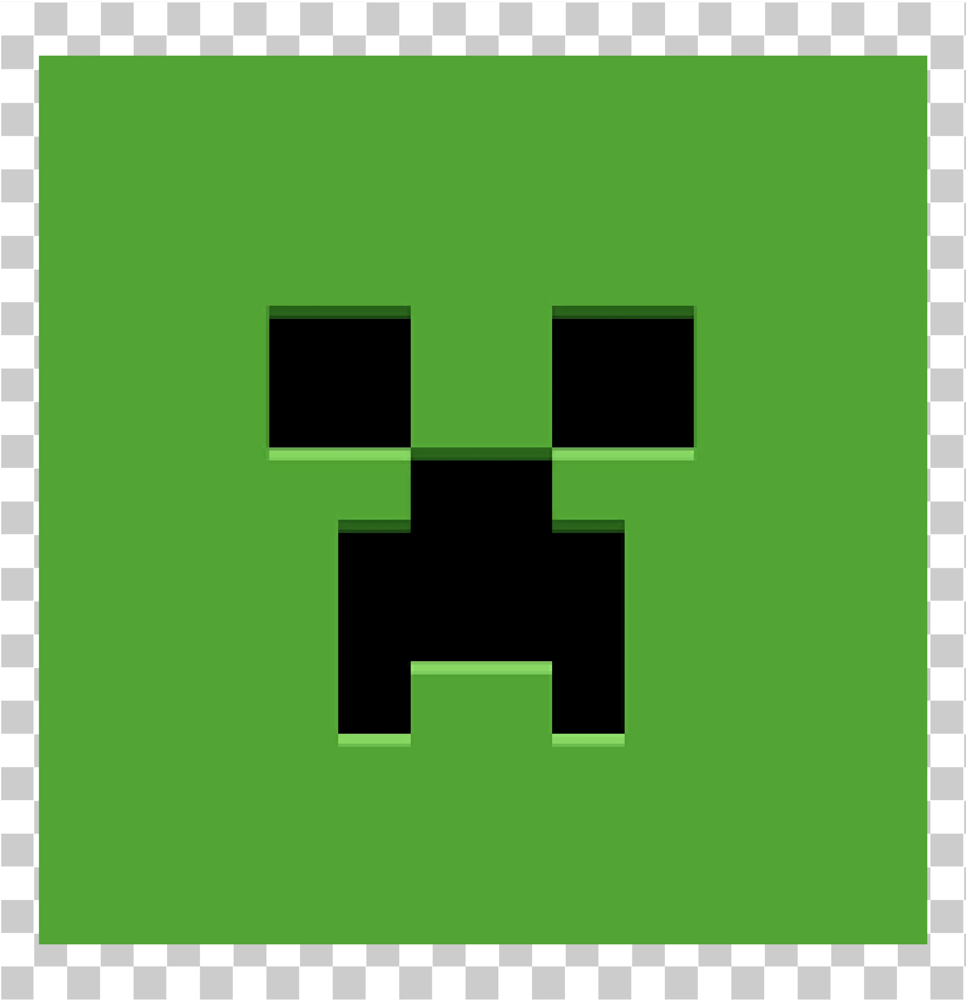
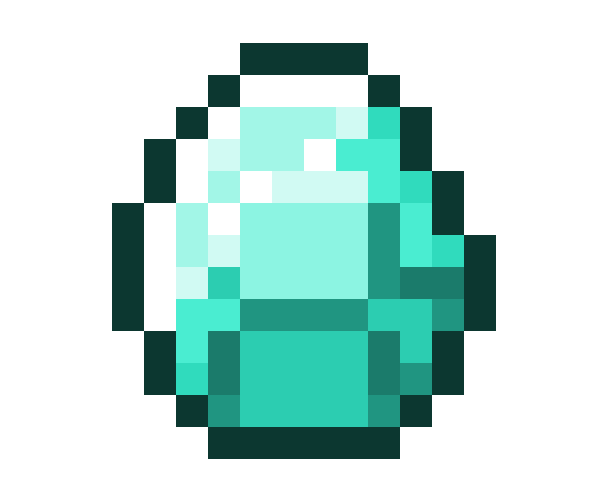

Bubble / Circle Packing
Usado para comparar PC e Mobile pela quantidade de círculos. Quanto maior o conjunto, maior a quantidade de usuários.
Análise exploratória da amostra por plataforma, idade e tipo de versão.
Somente registros classificados como Cracked são considerados nesta comparação.
Cada quadradinho-círculo representa um usuário Cracked com idade válida. O marcador vertical indica a média da idade.
A matriz contém um quadrado para cada registro, em sequência: primeiro todos os Paid Version, depois todos os Cracked. Assim, a proporção pode ser percebida sem usar gráfico de pizza ou barras.


Paid VersionUsado para comparar PC e Mobile pela quantidade de círculos. Quanto maior o conjunto, maior a quantidade de usuários.
Mostra a distribuição das idades, permitindo enxergar concentração e dispersão, além da média.
Transforma cada registro em um pequeno quadrado, agrupados por tipo de versão, tornando a relação Cracked × Paid visualmente perceptível.